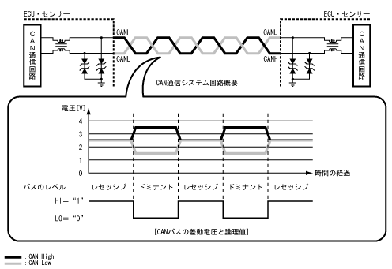

| CAN Communication System |
| ● |
A CAN*
[ISO11898] communication system, which transmits multiple items of information and data converted to digital signals by communication circuits over a pair of communication lines (twisted pair wiring), has been adopted. This reduces the wire harness and streamlines the electronic control systems connecting the input systems (sensors, switches, etc.), control units and output systems (motors, etc.).
|
| HINT |
| * |
CAN is an abbreviation for Controller Area Network, a serial communication conforming to ISO (International Organization for Standardization) standards.
|
| ● |
The CAN communication system uses the 2 communication lines (bus), CAN High and CAN Low, as a pair, and determines the bus level*
1from their differential voltage; this is transmitted as a digital signal conforming to a dedicated communication protocol (communication rules) at a speed of 500kbps*
2(V bus) or 250kbps (MS bus).
|
| HINT |
 |
 CAN Communication Network CAN Communication Network
|
| CAN Communication System Configuration
|
| CAN Communication Protocol (Communication Rules)
|
| CAN Gateway Computer
|
 Related Parts Related Parts
|